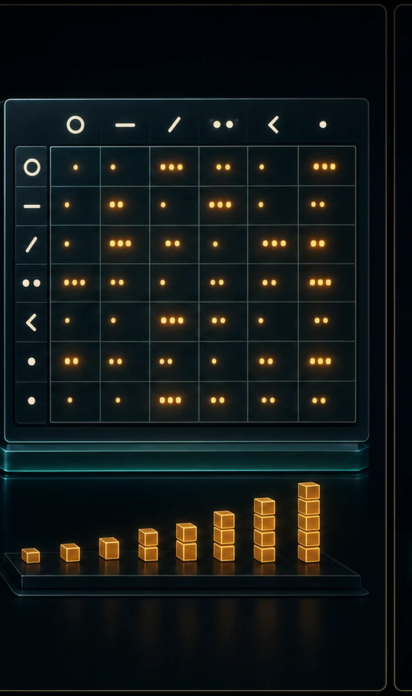
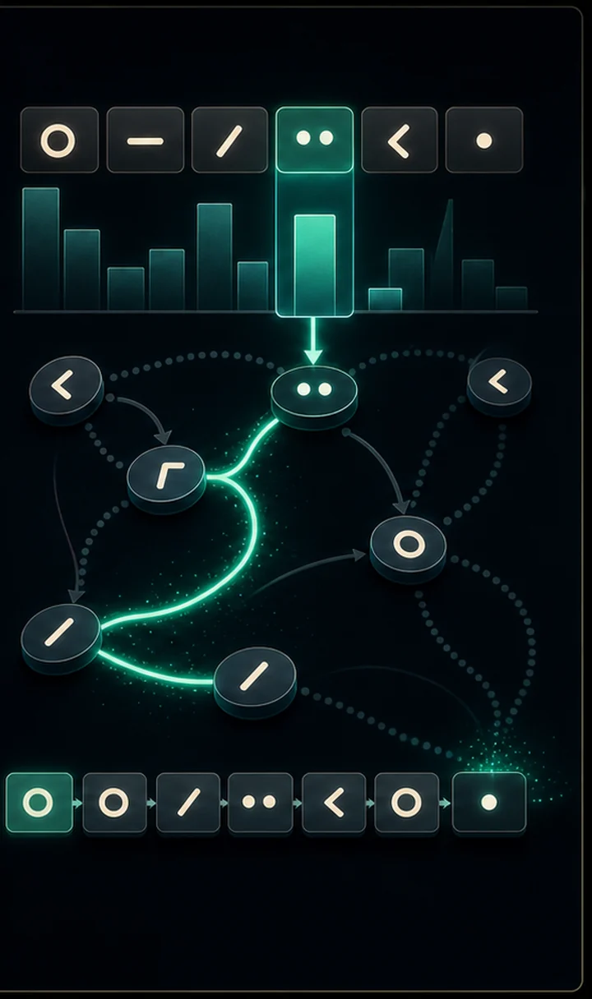

A language model answers one question: given what came before, what comes next? The simplest possible version doesn't even use a network — it just counts which character tends to follow which, then samples from those frequencies.
The generated names are mostly gibberish, and that's the lesson: looking at only one previous character has no memory of the wider word. Every later step exists to fix this.
Language modeling is the task of estimating P(next token | previous tokens). A bigram model makes the Markov assumption that the next token depends only on the current one. Under that assumption the maximum-likelihood estimate has a closed form: count each pair and normalize each row to a probability distribution.
Smoothing (adding 1 to every count, a.k.a. Laplace smoothing) prevents any transition from having probability zero — otherwise an unseen pair would make the whole sequence impossible and the log-loss infinite. Generation is then just repeated sampling from each conditional distribution. The fatal limit: a context of one token has no memory of the wider word, which is exactly what later steps fix.



import numpy as np
# A tiny training corpus. Real models use millions of words; we use a handful
# of names so you can eyeball what's happening. '.' is a special marker for
# both START and END of a word.
WORDS = [
"emma", "olivia", "ava", "isabella", "sophia", "mia", "amelia", "harper",
"liam", "noah", "oliver", "william", "james", "benjamin", "lucas", "henry",
"anna", "anya", "maria", "elena", "nina", "sara", "leo", "max", "ella",
]
def build_counts(words):
"""Count every (current_char -> next_char) pair across all words."""
# 27 symbols: '.' (index 0) plus 'a'..'z' (1..26).
chars = ["."] + sorted("abcdefghijklmnopqrstuvwxyz")
stoi = {c: i for i, c in enumerate(chars)} # char -> index
itos = {i: c for c, i in stoi.items()} # index -> char
counts = np.zeros((27, 27), dtype=np.int64)
for word in words:
# Wrap each word with start/end markers: ".emma."
symbols = ["."] + list(word) + ["."]
for current, nxt in zip(symbols, symbols[1:]):
counts[stoi[current], stoi[nxt]] += 1
return counts, stoi, itos
def to_probabilities(counts):
"""Convert raw counts into a probability for each row.
+1 is 'smoothing': it stops any transition from being impossible (prob 0),
which would otherwise break sampling and infinite-loss situations.
"""
probs = counts.astype(np.float64) + 1
probs /= probs.sum(axis=1, keepdims=True) # each row sums to 1
return probs
def generate(probs, itos, rng, max_len=20):
"""Sample one new word, character by character, until we hit '.'."""
index = 0 # always start at '.'
out = []
for _ in range(max_len):
# Pick the next character according to the learned probabilities.
index = rng.choice(27, p=probs[index])
if index == 0: # hit the end marker
break
out.append(itos[index])
return "".join(out)counts, stoi, itos = build_counts(WORDS)
probs = to_probabilities(counts)
# Peek at what it learned: what most often follows the start marker '.'?
start_row = probs[0]
top = np.argsort(start_row)[::-1][:5]
print("Most likely first letters:")
for i in top:
print(f" '{itos[i]}' {start_row[i]:.2%}")
print("\nGenerated names:")
rng = np.random.default_rng(0)
for _ in range(10):
print(" " + generate(probs, itos, rng))Most likely first letters: 'a' 9.62% 'm' 7.69% 'e' 7.69% 'l' 7.69% 's' 5.77% Generated names: nea sxormxu t ocwngk bqqpizzrpqjaqngmvyhm hnhiveoastfwacckuebi ecogrcyhanyjylinzykt llsisqyaqyz tzybzxvkfuxfnjx po